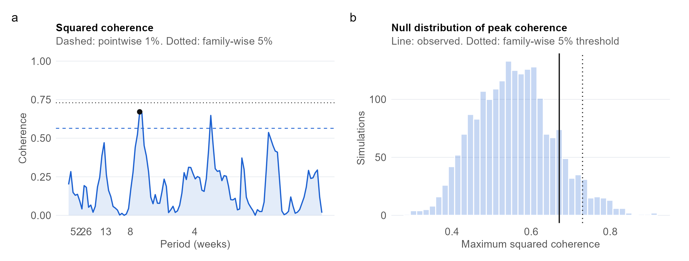

Exploration with a simulation check and a hand-coded estimator
Data used
Eskom Energy Availability Factor (derived from hourly system data, averaged to weeks) and JSE All Share (last close of each week, Yahoo Finance). Period: Apr 2019 to Sept 2023 (231 weekly changes). Both series are public and aggregate, so no personal data and no POPIA consent issue.
Methods used
Smoothed cross-spectrum and squared coherence (modified Daniell kernel, hand-coded and validated against spec.pgram), phase-implied lead, pointwise F threshold, family-wise threshold from simulated independent series, simulation check of the method, bandwidth, differencing and subsample robustness, linear filtering.
Question
At which time scales, if any, do changes in Eskom’s grid availability and JSE returns move together, and does either lead?
Key findings
0.67
peak squared coherence
0.127
family-wise p-value of the peak
7.0 wk
period of the peak
0.026 vs 0.009
share above 1% line vs chance
Shared time scale. The family-wise test does not reject the null of no shared frequency at the 5% level. The strongest association has squared coherence 0.67 at a period of about 7.0 weeks, against a family-wise threshold of 0.73.
Breadth. The share of frequencies above the pointwise 1% line is 0.026, against 0.009 expected by chance under independence.
Direction. Because coherence is not significant at the family-wise level, I do not interpret the phase.
Robustness. 1 of 6 alternative specifications (bandwidths, detrended EAF, two subsamples) reject at the 5% family-wise level.
Method check. The hand-coded coherence matches spec.pgram to within 1.6e-02, and a simulated 3-week lead is recovered as 2.91 weeks.
What this does and does not show. Coherence measures linear association by time scale, not causation, and differencing removes the slow movements in which a multi-year recovery would sit. The Eskom data end in September 2023, so the findings cover 2019 to 2023 only.

Left: squared coherence between the change in EAF and JSE returns, with pointwise (dashed) and family-wise (dotted) thresholds. Right: distribution of the peak coherence between independent series, with the observed peak marked.
What I would do differently
I would use a longer window, since about 230 weekly observations resolve cycles slower than a year poorly and the Eskom file stops in September 2023. I would swap the All Share for an index of energy-intensive firms, and use wavelet coherence so the shared time scale can change through time, since load-shedding intensity changed sharply over the sample.
---title: "Project 2: Spectral Coherence"subtitle: "Does grid stability explain JSE movements?"toc: falsenumber-sections: falseexecute: echo: false warning: false message: false---```{r}#| include: false# Load the numbers saved by analysis.qmd (shows a dash until that page has been rendered)res <-if (file.exists("results/p2_results.rds")) readRDS("results/p2_results.rds") elseNULLval <-function(k, f ="%.2f") if (is.null(res)) "—"elsesprintf(f, res[[k]])txt <-function(k) if (is.null(res)) "—"else res[[k]]```::: {.pf-meta}| | ||:----|:--------------------------------------------|| Section and topic | Part 1: Spectral analysis and filtering || Type of project | Exploration with a simulation check and a hand-coded estimator || Data used | Eskom Energy Availability Factor (derived from hourly system data, averaged to weeks) and JSE All Share (last close of each week, Yahoo Finance). Period: `r txt("period")` (`r val("n", "%d")` weekly changes). Both series are public and aggregate, so no personal data and no POPIA consent issue. || Methods used | Smoothed cross-spectrum and squared coherence (modified Daniell kernel, hand-coded and validated against `spec.pgram`), phase-implied lead, pointwise F threshold, family-wise threshold from simulated independent series, simulation check of the method, bandwidth, differencing and subsample robustness, linear filtering. |:::## QuestionAt which time scales, if any, do changes in Eskom's grid availability and JSE returns move together, and does either lead?## Key findings```{r}#| output: asistile <-function(big, lab) sprintf('<div class="pf-stat"><div class="pf-stat-n">%s</div><div class="pf-stat-l">%s</div></div>', big, lab)cat('<div class="pf-stats">',tile(val("max_coh"), "peak squared coherence"),tile(txt("p_fw_txt"), "family-wise p-value of the peak"),tile(paste0(val("per_peak", "%.1f"), " wk"), "period of the peak"),tile(paste0(val("frac_obs", "%.3f"), " vs ", val("frac_null", "%.3f")), "share above 1% line vs chance"),'</div>', sep ="\n")```- **Shared time scale.** The family-wise test `r txt("verdict")` the null of no shared frequency at the 5% level. The strongest association has squared coherence `r val("max_coh")` at a period of about `r val("per_peak", "%.1f")` weeks, against a family-wise threshold of `r val("c_fw")`.- **Breadth.** The share of frequencies above the pointwise 1% line is `r val("frac_obs", "%.3f")`, against `r val("frac_null", "%.3f")` expected by chance under independence.- **Direction.** `r txt("lead_txt")`- **Robustness.** `r val("n_rob", "%d")` of `r val("n_alt", "%d")` alternative specifications (bandwidths, detrended EAF, two subsamples) reject at the 5% family-wise level.- **Method check.** The hand-coded coherence matches `spec.pgram` to within `r val("diff_coh", "%.1e")`, and a simulated 3-week lead is recovered as `r val("lead_est")` weeks.**What this does and does not show.** Coherence measures linear association by time scale, not causation, and differencing removes the slow movements in which a multi-year recovery would sit. The Eskom data end in September 2023, so the findings cover 2019 to 2023 only.{fig-alt="Two panels: squared coherence across periods with threshold lines, and the null distribution of peak coherence with the observed value."}## What I would do differentlyI would use a longer window, since about 230 weekly observations resolve cycles slower than a year poorly and the Eskom file stops in September 2023. I would swap the All Share for an index of energy-intensive firms, and use wavelet coherence so the shared time scale can change through time, since load-shedding intensity changed sharply over the sample.## Detailed analysis[Read the detailed analysis →](analysis.html){.pf-button}<small>Code and data: [Code & Data appendix](../../appendix/code_and_data.qmd). AI assistance: [AI Use Log](../../appendix/ai_use_log.qmd).</small>